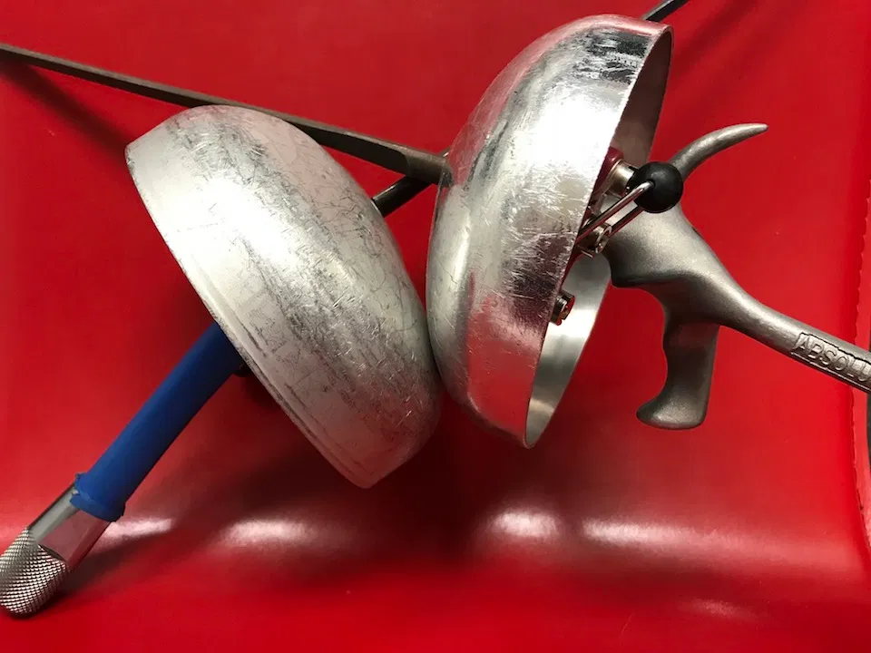
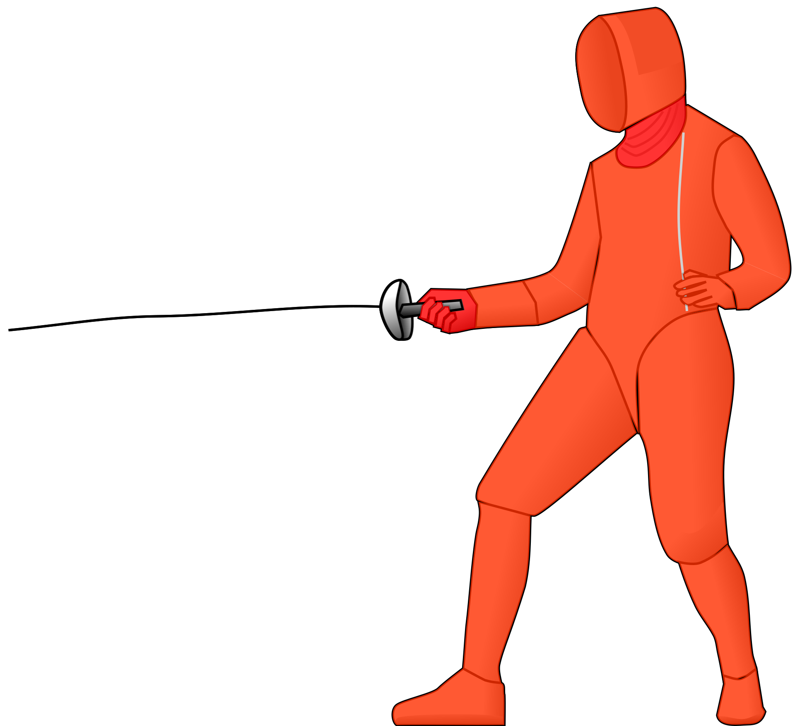

The Épee is the largest and heaviest of the three weapons used in fencing. The Épée is considered the original duelling sword. It developed in the middle of the 19th century to train individuals for duels. If you've seen any movie with a lot of swordplay in it, chances are you are watching épée.
The Blade

The Épée blade is triangular in cross section with a V-shaped groove called a fuller. The blade of the épée is typically 90cm from the guard to the tip. The total weight of the weapon is about 300-400g. The tip of the épée has an electric button assembly. This is used to electrically detect touches.
The guard of the épée is a hemispherical shield about 10cm in diameter. The guard is much larger than the one used for foil as the hand is a valid target in épée fencing. As like the foil, the grip of the épée comes in two varieties, the traditional grip or the modern pistol grip
Rules of Épée

Like the foil, the épée is a thrusting weapon only and the épée attack is with the point of the weapon. However, unlike foil, the target area is the entire body, head to toe, including any clothing and equipment. This means épée fencers don't have a lamé to define their target area.
Also unlike sabre and foil, épée fencing does not follow priority rules. Any touch which is made is counted, and touches are awarded solely based on which fencer hits first. The lack of a priority system, along with a much more exposed target area make épée bouts much slower, but with suddent bursts of speed, as fencers are trying to counterattack